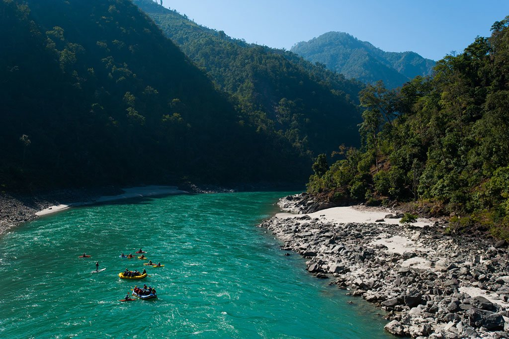

Nepal is a paradise for rafting enthusiasts, offering thrilling white-water experiences across its many rivers. I paddle through the rushing rapids of the Trishuli River, a popular choice for both beginners and experienced rafters. The Bhote Koshi River delivers an intense adrenaline rush with its steep drops and powerful currents, making every moment on the water an adventure. Rafting was so much fun! I paddled through the fast-moving water, feeling the waves splash over me. The river was wild and exciting, making my heart race with every turn. The cool water and fresh air made the adventure even better. I worked with my team to steer the raft, laughing and cheering as we made it through the rough spots.
Trishuli Rafitng
 Rafting is an exhilarating adventure where I navigate rushing river currents, paddling through rapids and feeling the thrill of the water splashing around me. Nepal is a paradise for rafting enthusiasts, offering thrilling white-water experiences across its many rivers. I paddle through the rushing rapids of the Trishuli River, a popular choice for both beginners and experienced rafters. The Bhote Koshi River delivers an intense adrenaline rush with its steep drops and powerful currents, making every moment on the water an adventure. I work as part of a team, coordinating strokes to steer the raft safely while experiencing the raw power of nature. With each twist and turn, I challenge myself, soaking in breathtaking scenery and the excitement of conquering waves.
Pokhara Rafting


Bhotekoshi Rafting Trishuli Rafting Pokhara Rafting Marsyandi Rafting